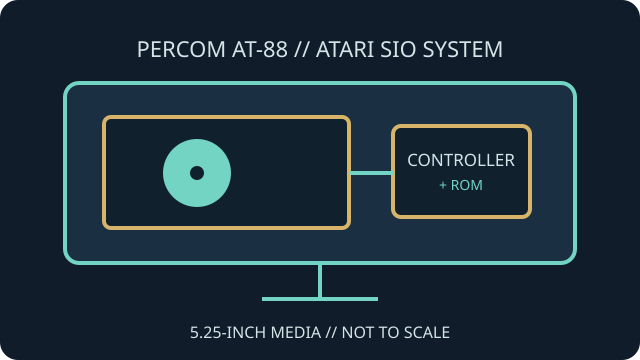

[ INDIVIDUAL COMPONENT // FLOPPY DRIVES ]
Percom AT-88 Disk Drive
The Percom AT-88 is an external 5.25-inch disk drive system made for Atari 8-bit computers. Its onboard controller and firmware provide disk functions through the Atari peripheral bus.

IDENTIFICATION NOTE: AT-88 configurations and controller/firmware options vary. Use the specific drive's label and manual; do not treat all Percom disk units or optional controller add-ons as identical.
Model specifications
| Catalog subcategory | External floppy mechanisms |
|---|---|
| Exact model | Percom AT-88 disk drive system |
| Drive format | External 5.25-inch disk mechanism; exact tracks, density and formatted capacity depend on installed mechanism, controller option and software. |
| Host interface | Atari SIO (Serial Input/Output) peripheral bus. |
| Controller behavior | Controller and firmware provide Atari-specific disk commands; optional density/controller revisions must be identified from the unit documentation. |
| Host compatibility | Designed for Atari 8-bit hosts with a compatible SIO connection and DOS/software that supports the drive's format and command behavior. |
Model-specific compatibility checks
- Confirm the full AT-88 suffix, installed options, ROM and interface connectors; the name alone does not identify every shipped configuration.
- Use the Atari SIO chain and a compatible host. Do not connect the SIO cable to a standard PC floppy-controller header.
- Consult the manual before using nonstandard density modes or high-speed software features; firmware revisions may constrain them.
Preservation and service notes
Record configuration switches, firmware labels and installed mechanism before service. Service the drive using the AT-88 manual and the mechanism maker's alignment procedure, not a generic PC calibration assumption.
Retain Atari disk images and acquisition notes separately from any converted filesystem copies. Avoid write operations on original media during compatibility tests.
Manufacturer documentation & sources
- Percom Data — AT-88 Disk Drives for the Atari ComputerArchived AT-88 user documentation and operating information.
- AtariWiki — Percom AT-88Model-specific reference to AT-88 configuration, commands and compatibility.
For option-dependent behavior, treat the installed controller and firmware as part of the model identification.